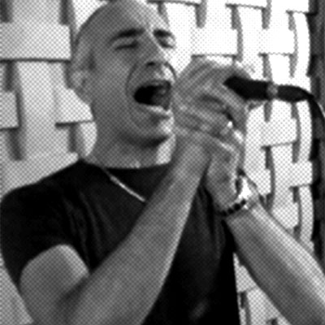
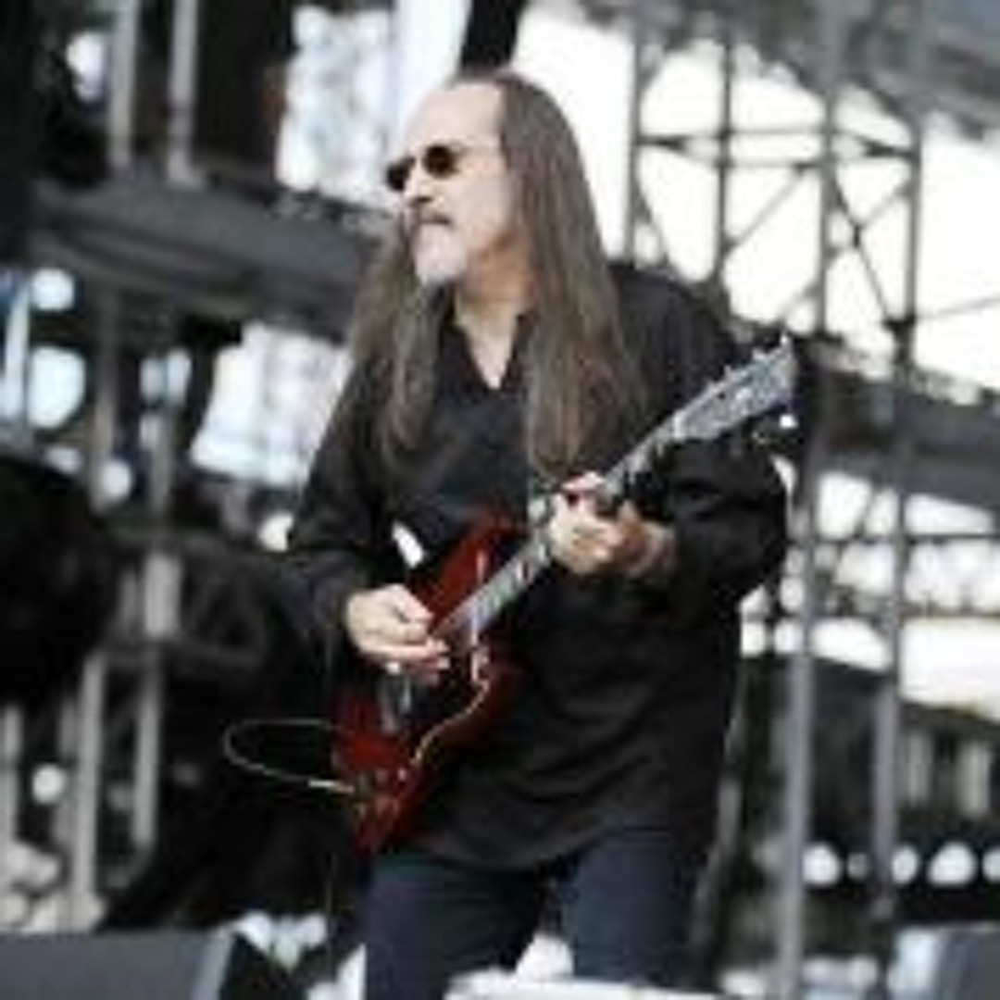

Integrantes
 É o único integrante original e símbolo da continuidade da banda desde os anos 80.
É o único integrante original e símbolo da continuidade da banda desde os anos 80.
Tibério Corrêa Neto (Tibério Luthier)
Função: baterista e fundador do Harppia
Tibério Corrêa Neto iniciou sua trajetória musical nos anos 1970, primeiro como guitarrista, depois dedicando-se à bateria, instrumento com o qual se consolidou. Em 1985, fundou o Harppia, uma das bandas pioneiras do heavy metal brasileiro. Paralelamente, criou a “Luthier Drum”, fábrica artesanal de baterias reconhecida por sua qualidade. Ao longo das décadas, gravou todos os discos da banda e se manteve como o principal pilar do grupo, liderando cada nova formação e mantendo viva a identidade sonora do Harppia.
 É responsável por grande parte da sonoridade moderna e pela presença feminina marcante no Harppia.
É responsável por grande parte da sonoridade moderna e pela presença feminina marcante no Harppia.
Aya Maki
Função: guitarrista e compositora
Natural de São Paulo, Aya começou na música ainda jovem, estudando piano e violão antes de se apaixonar pela guitarra aos 18 anos. Foi convidada por Tibério em 2010 para integrar o Harppia, trazendo uma energia renovada à banda. Desde então, participa ativamente nas composições e gravações, incluindo os álbuns 3.6.9. H.A.A.R.P. (2017) e Caixa de Pandora (2023). Suas influências vão de Tony Iommi a Lita Ford, o que contribui para um estilo técnico e melódico que se destaca nas novas fases do grupo.
 Sua entrada simboliza a renovação criativa do Harppia e a ponte entre gerações do metal nacional.
Sua entrada simboliza a renovação criativa do Harppia e a ponte entre gerações do metal nacional.
Allan Gomes
Função: vocalista e guitarrista
Allan Gomes entrou para o Harppia na fase mais recente, assumindo os vocais e a guitarra no álbum Caixa de Pandora (2023). Sua versatilidade vocal e energia de palco trouxeram novo vigor ao som da banda. Antes do Harppia, Allan participou de projetos no cenário do metal nacional, acumulando experiência em estúdios e shows pelo país. Sua chegada marcou a união entre o legado clássico do grupo e uma pegada contemporânea, reforçando o peso e a identidade do heavy metal brasileiro.
Outros Integrantes que já fizeram parte da banda são:
-

Jack Santiago – vocal -

Hélcio Aguirra – guitarra -
Marcos Patriota – guitarra -
Ricardo Ravache – baixo -
Percy Weiss – vocal -
Flávio Gutok – guitarra -
Cláudio Cruz – baixo -
Filippo Lippo – guitarra -
Marcos Rizzato – guitarra